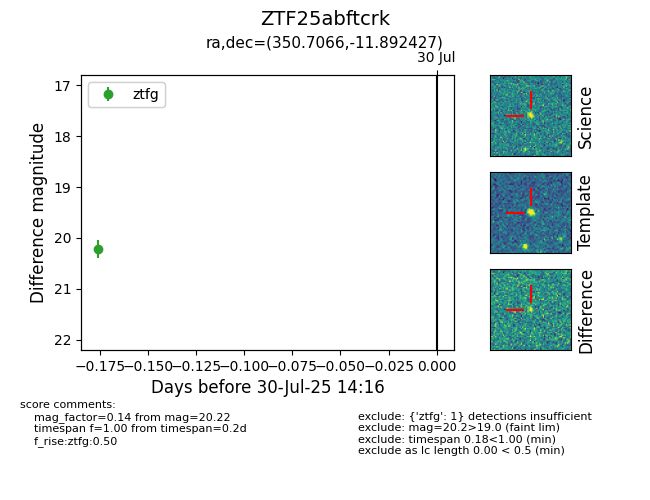

Target ZTF25abftcrk at 2025-07-30 14:16, see:
FINK: fink-portal.org/ZTF25abftcrk
Lasair: lasair-ztf.lsst.ac.uk/objects/ZTF25abftcrk
ALeRCE: alerce.online/object/ZTF25abftcrk
alt names
ZTF25abftcrk (ztf,fink)
coordinates:
equatorial (ra, dec) = (350.7066,-11.89243)
galactic (l, b) = (64.8522,-64.23234)
photometry
last ztfg=20.22
1 ztfg detections
